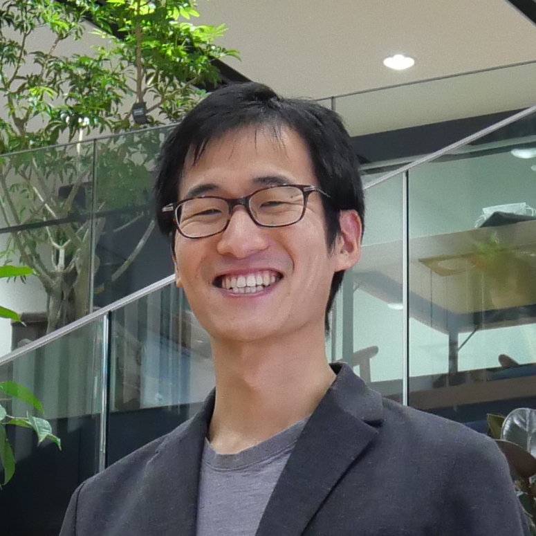

EIGER TEAM
JWST GTO #1243 Principal Investigator
Simon J. Lilly
(ETH Zurich)
Core members
(random order)

Daichi Kashino (Nagoya U.)
Jorryt Matthee (ETH Zurich)
Ruari Mackenzie (ETH Zurich)
Rongmon Bordoloi (NCSU)
Anna-Christina Eilers (MIT)
Robert A. Simcoe (MIT)
Collaborators
Minghao Yue (MIT)
Rohan Naidu (MIT)
ACKNOWLEDGEMENTS
The EIGER project is based on observations made with the NASA/ESA/CSA James Webb Space Telescope under GTO program # 1243.